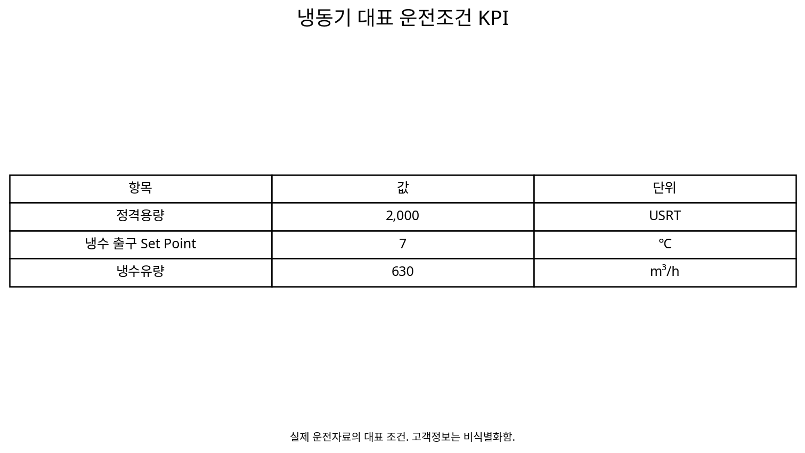

냉동기 냉수 출구온도 Set Point 상향을 통한
냉동효율 개선 및 전력절감
생산공정과 공조·제습조건이 요구하는 냉수온도를 확인한 뒤, 냉수 출구 Set Point를 단계적으로 조정하면서 냉동부하·소비전력·kW/RT와 냉동시스템 전체 전력을 비교하여 최적 운전점을 찾는 제조공장 냉동시스템 Test & Adjust 사례.
ChillerChilled WaterSet PointkW/RTSystem BoundaryTest & Adjust1. 공정이 요구하는 온도보다 더 낮은 냉수를 만들고 있지는 않을까?
냉동기는 일반적으로 더 낮은 증발온도를 만들수록 압축기가 감당해야 할 Lift가 커질 수 있다. 따라서 실제 부하가 요구하는 온도보다 낮은 냉수를 지속적으로 공급하고 있다면 Set Point를 조정하여 냉동기 운전효율을 개선할 여지가 생긴다.
하지만 냉수온도는 단순한 에너지 설정값이 아니다. 생산공정, AHU 냉각코일, 제습과 실내 온·습도에 직접 영향을 줄 수 있으므로 에너지절감을 위해 냉수온도를 무조건 높이는 접근도 적절하지 않다.
2. 실제 운전조건부터 계측했다
운전분석에서는 냉동기 가동상태, 냉동용량, 냉수 입·출구온도, 출구 Set Point, 냉수유량, 냉각수 입·출구온도와 유량, 냉동기 소비전력, 냉수펌프와 냉각수펌프 전력을 함께 확인한다.
Set Point 사례
실제 운전 시나리오에는 냉수 입구 약 17℃, 출구 약 7℃, 출구 Set Point 7℃, 유량 약 630 m³/h 조건과 함께 냉동기·냉수펌프·냉각수펌프의 동력과 유량이 호기별로 관리되어 있었다.
실제 운전표에는 같은 2,000 USRT급 5℃ 냉동기라도 호기별 운전상태가 달랐다. 예를 들어 #14는 냉수 입구 약 14.8℃, 출구 약 7.3℃, 유량 약 859 m³/h로 기록되어 있었고, #08은 입구 약 17℃, 출구 약 8.5℃, 유량 약 760 m³/h로 나타났다. 이는 정격용량이 같은 냉동기라도 실제 부하와 유량·온도조건이 다르므로 단순 kW 비교보다 RT와 kW/RT로 정규화해야 하는 이유를 보여준다.
3. 최적화 전에 계측 인프라부터 확인했다
이 프로젝트에서는 냉동기 성능을 계산하기 위해 필요한 계측항목 자체를 먼저 조사했다. 2,000 USRT급 냉동기별로 모터전류, 냉수·냉각수 입·출구온도, 냉수·냉각수펌프 전류와 유량·압력 등을 확인하고, 기존 시스템에서 확보되는 계측과 추가로 필요한 계측을 구분하였다.
이 과정이 중요한 이유는 냉동기 효율이 단순 전력계 하나로 계산되지 않기 때문이다. 실제 RT를 계산하려면 최소한 냉수유량과 공급·환수온도차가 필요하고, Plant 전체를 평가하려면 Pump와 냉각수계통의 동력까지 연결되어야 한다. 즉 운전최적화보다 먼저 Measurement Boundary와 Data Quality를 설계한 것이다.
5. Set Point를 바꾸기 전에 최종 수요처부터 확인한다
현재 7℃로 운전한다고 해서 곧바로 8℃나 9℃로 변경하지 않는다. 냉수를 실제로 사용하는 부하측의 요구조건을 먼저 확인해야 한다.
요구온도
조건
요구
유량
범위
특히 제습이 필요한 공간에서는 냉수온도 상승이 Coil 표면온도와 잠열처리에 영향을 줄 수 있다. 따라서 생산품질과 온·습도, 제습성능은 에너지 KPI와 동등한 제약조건으로 취급한다.
5. 이 활동의 취지 — 설비교체 전에 ‘운전점’을 먼저 찾는다
대형 냉동시스템의 효율개선은 반드시 냉동기를 교체해야만 가능한 것은 아니다. 기존 설비의 성능이 충분하더라도 냉수온도, 냉각수온도, 부하배분과 펌프운전이 실제 수요와 맞지 않으면 시스템은 최적점에서 벗어날 수 있다.
따라서 본 활동은 장비효율 판단 → 운전 최적점 도출 → Test & Adjust → 시스템 Loss 저감으로 이어지는 Utility 운전최적화 체계 안에서 수행되었다. 냉수출구온도 상향은 냉각수 입구온도 조정, 고효율 냉동기 고부하 운전과 함께 ‘설비를 바꾸기 전에 운전조건에서 찾을 수 있는 개선기회’를 검토하는 Action이었다.
설계 Set Point는 모든 계절·생산부하에서 항상 최적이라는 보장이 없다. 실제 운전데이터를 이용해 허용범위 안에서 조건을 단계적으로 바꾸고 시스템 반응을 확인하면 기존 설비의 운전여유와 최적점을 찾을 수 있다.
7. kW가 아니라 kW/RT로 비교하는 이유
Set Point 변경 후 냉동기 kW가 낮아졌더라도 동시에 냉동부하가 줄었다면 그 차이를 모두 효율개선으로 볼 수 없다. 그래서 냉수유량과 공급·환수 온도차로 냉동부하를 계산하고 소비전력을 부하로 정규화한다.
kW/RT = 냉동기 소비전력(kW) ÷ 실제 냉동부하(RT)
이 KPI를 사용하면 서로 다른 부하조건의 운전을 보다 공정하게 비교할 수 있다. 다만 최종 판단에서는 냉동기 단독 kW/RT뿐 아니라 펌프와 냉각탑까지 포함한 시스템 효율도 함께 확인한다.
7. 왜 냉수 Set Point 상향이 효율에 영향을 줄 수 있는가?
냉동기의 증발측 냉매온도는 냉수 공급온도와 연결되어 있다. 냉수 공급온도를 허용범위 내에서 높이면 증발온도를 높일 여지가 생기고, 응축측 조건이 유사하다면 압축기가 만들어야 하는 압력차가 줄어 효율개선 가능성이 생긴다.
그러나 실제 효과는 냉동기 종류, 부하율, 냉각수온도, 제어로직과 펌프·Fan 운전에 따라 달라진다. 따라서 ‘1℃ 올리면 몇 % 절감’ 같은 일반값을 현장성과로 적용하지 않고 해당 시스템에서 단계별 Test로 직접 확인하는 것이 중요하다.
8. 단계별 Set Point Test를 설계한다
기존 운전조건을 Baseline으로 확보한 후 공정·공조 담당자와 허용범위를 정하고 Set Point를 작은 단계로 조정한다. 변경 직후 값이 아니라 시스템 안정화 이후 데이터를 사용한다.
| 평가항목 | Baseline | Test 1 | Test 2 | Test 3 |
|---|---|---|---|---|
| 냉수 출구 Set Point | 실측 | 조정 | 조정 | 조정 |
| 공급/환수온도·ΔT | 실측 | 실측 | 실측 | 실측 |
| 냉수유량 | 실측 | 실측 | 실측 | 실측 |
| 냉동부하 RT | 계산 | 계산 | 계산 | 계산 |
| Chiller kW/RT | 계산 | 계산 | 계산 | 계산 |
| 공정·온습도·제습 | 정상 | 확인 | 확인 | 확인 |
9. Chiller Only에서 Chiller Plant로 Boundary를 넓힌다
냉수온도를 바꾸면 냉동기뿐 아니라 냉수유량, 밸브개도, 펌프와 냉각수계통 운전도 달라질 수 있다. 냉동기 kW/RT가 좋아져도 다른 보조동력이 증가한다면 시스템 전체 절감효과는 작아질 수 있다.
냉동기 kW + 냉수펌프 kW + 냉각수펌프 kW + 냉각탑 Fan kW → Chiller Plant Total kW → System kW/RT
이 때문에 최적점은 Chiller kW/RT 최소점보다 공정조건을 만족하는 범위에서 Chiller Plant 전체 전력이 최소가 되는 지점으로 판단하는 것이 더 실무적이다.
10. 최적 Set Point의 조건은 다섯 가지다
가장 높은 냉수온도가 최적점은 아니다. 다섯 조건을 동시에 만족하는 운전점을 선택해야 한다. 이 구조는 에너지 최적화가 생산과 실내환경이라는 제약조건 안에서 수행되어야 한다는 점을 분명하게 한다.
11. 실제 개선 Action은 Test & Adjust로 관리했다
냉동시스템 운전 최적점 도출 활동에서는 냉수출구온도 상향운전(Set값 변경)을 독립적인 Action Item으로 두었고, 냉각수 입구온도 하향운전과 고효율 장비 고부하 운전도 함께 Test & Adjust 항목으로 관리하였다.
이 구조는 한 가지 설정값만 보는 것이 아니라 증발측, 응축측, 부하배분을 각각 시험하고 최종적으로 냉동시스템 전체의 운전점을 찾아가는 접근이다.
12. 16단계 진단·개선 Process
실무에서는 다음 순서로 정리할 수 있다.
① 운전데이터 수집 → ② Set Point·실제 공급온도 확인 → ③ 공급·환수온도와 ΔT → ④ 유량 측정 → ⑤ RT 계산 → ⑥ 냉동기 kW → ⑦ kW/RT → ⑧ 생산공정 요구온도 → ⑨ AHU·제습조건 → ⑩ 조정 가능범위 → ⑪ 단계별 Set Point Test → ⑫ 안정화 후 재수집 → ⑬ 유사부하 kW/RT 비교 → ⑭ 생산·온습도·제습 검증 → ⑮ Pump·Fan 포함 System kW/RT → ⑯ 최적 Set Point 결정
13. 연구소 관점 — 고정 Set Point를 ‘조건별 최적 Set Point’로 바꾼다
하나의 고정 냉수온도가 연중 모든 조건에서 최적이라고 보기 어렵다. 생산부하, 외기온습도, 냉각수온도와 설비부하율이 달라지면 유리한 운전점도 달라질 수 있다.
따라서 장기간 데이터를 축적하면 생산부하와 기상조건별로 System kW/RT를 분석하여 계절·부하구간별 Set Point Guide를 만들 수 있다. 이는 단순한 수동 Test를 데이터 기반 운전기준으로 발전시키는 단계다.
14. 다른 냉동시스템에는 어떻게 응용할 수 있는가?
이 방법은 제조공장의 5℃ 냉수계통뿐 아니라 일반 공조용 냉수, 데이터센터 냉각, 공정냉각 등에도 응용할 수 있다. 다만 적용 전에 최종 부하가 요구하는 공급온도와 ΔT, 제습 여부, 생산품질 또는 장비 허용온도를 먼저 확인해야 한다.
| 적용대상 | 먼저 확인할 제약조건 | 주요 KPI |
|---|---|---|
| 일반 업무·상업건물 | 실내온습도, AHU Coil, 제습 | Plant kW/RT, Comfort |
| 제조공정 냉각 | 공정 요구온도, 생산품질, 설비 Interlock | RT, kW/RT, 품질조건 |
| 데이터센터 | IT Inlet Temperature, CRAH/CRAC 조건 | Cooling kW, PUE 연계 |
| 다중 냉수온도 계통 | 5℃·13℃ 등 수요처별 온도등급 | 계통별 RT, 부하분담, System kW/RT |
특히 여러 온도등급의 냉수계통이 존재한다면 모든 부하를 가장 낮은 온도의 냉수로 처리하기보다, 실제 요구온도에 맞게 부하를 분리·분담할 수 있는지도 검토할 수 있다. 이는 냉수 Set Point 최적화에서 한 단계 더 나아간 Temperature Level Optimization이다.
15. M&V를 더 정교하게 하려면 부하와 기상조건을 보정한다
짧은 Test에서는 가능한 한 동일·유사한 RT 조건을 비교하는 것이 기본이다. 장기간 운전성과를 평가할 때는 생산부하, 외기온습도, 냉각수온도 등이 달라질 수 있으므로 단순 Before/After만으로는 Set Point 효과와 부하변화를 분리하기 어렵다.
충분한 데이터가 있다면 기존 정상운전에서 System kW = f(RT, 냉각수온도, 외기조건, 냉수 Set Point 등) 형태의 Baseline Model을 구축하고, 변경 후 실제 조건에서 예상되는 전력과 실측전력을 비교하는 방식으로 발전시킬 수 있다. 이때도 목적은 복잡한 모델 자체가 아니라 운전조건이 달라져도 개선효과를 공정하게 비교하는 데 있다.
16. AI 기반 동적 Set Point로 확장
생산부하, 외기온습도, 냉수 공급·환수온도, 냉수유량, 냉각수온도, 밸브개도율, 냉동기·Pump·Fan 전력을 입력으로 사용하면 현재 조건에서의 냉동부하와 시스템 효율을 예측하는 모델로 발전시킬 수 있다.
조건
예측
제약
kW/RT 최소
Set Point
즉 고정 Set Point → 단계별 Test & Adjust → 조건별 운전가이드 → AI 기반 실시간 최적제어로 발전할 수 있다.
데이터와 분석 시각화

17. Evidence & Measurement Boundary
본 사례는 실제 냉동기 운전조건과 냉수출구온도 상향운전이라는 Test & Adjust Action을 기반으로 한다. 성능평가는 냉수온도만이 아니라 냉동부하, Chiller kW/RT, 공정·공조조건과 보조동력을 함께 비교하는 것이 핵심이다.
냉수출구온도 조정은 냉각수온도 및 부하배분 등 다른 운전최적화 활동과 함께 수행될 수 있으므로, 개별 설정변수의 효과를 평가할 때에는 해당 Test의 Measurement Boundary와 비교조건을 명확히 정의해야 한다.
18. Review 상태
Status: APPROVED / FINAL-LOCK